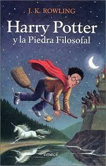

Harry Potter y la Piedra Filosofal
El Inicio de una Saga Mágica
J.K. Rowling
Editorial Salamandra - ISBN: 978-8498384376
Sinopsis de Harry Potter y la Piedra Filosofal
Harry Potter, un huérfano que vive con sus malvados tíos, descubre en su undécimo cumpleaños que es un mago. Invitado a estudiar en el Colegio Hogwarts de Magia y Hechicería, Harry descubre su verdadero origen y se enfrenta a la amenaza del temible Lord Voldemort.
Recomendado por Stephenie Meyer como la obra que revolucionó la literatura juvenil. J.K. Rowling creó un universo mágico tan detallado y apasionante que cautivó a millones de lectores en todo el mundo. Una historia sobre la amistad, el valor y la lucha entre el bien y el mal.
🎬 Análisis y Reseña del Libro
El niño que vivió y su primer año en la escuela de magia